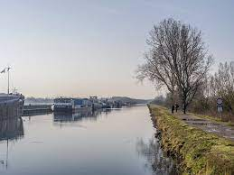
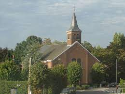

In onze buurt heb je, naast huizen, ook heel wat natuur. Zo kan je gezellig gaan wandelen, lopen en fietsen langs het water aan het Zennegat. In het water bevinden zich veel woonboten.
Daarnaast staat er in het centrum van Battel ook een kerkje dat momenteel wordt omgebouwd tot brouwerij en bijhorend café.
